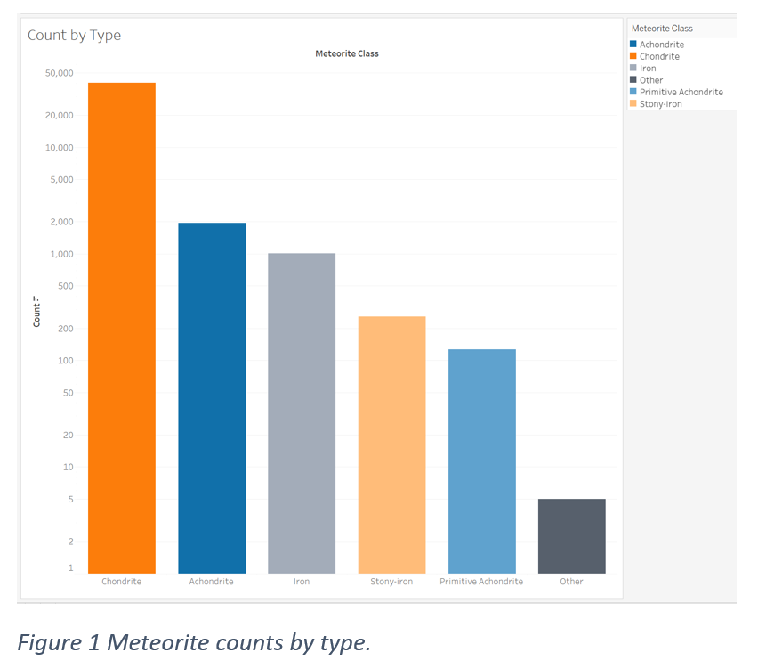
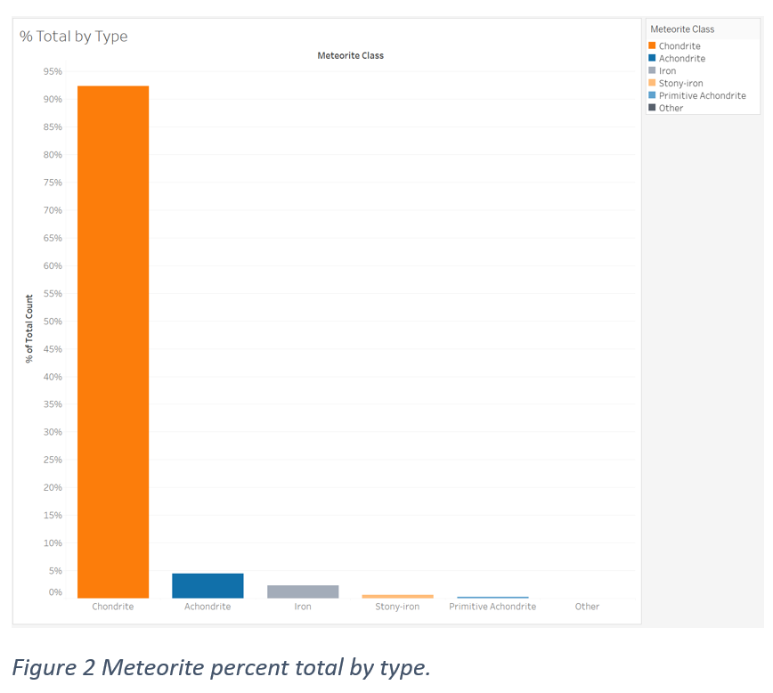
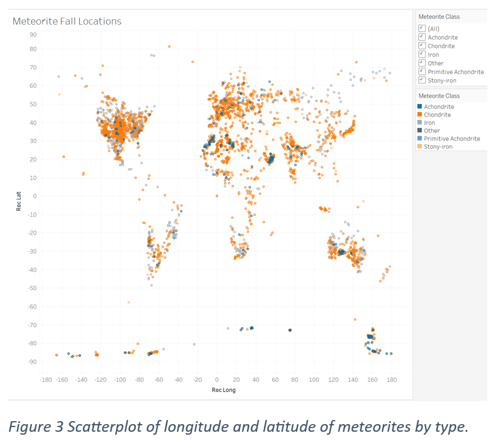
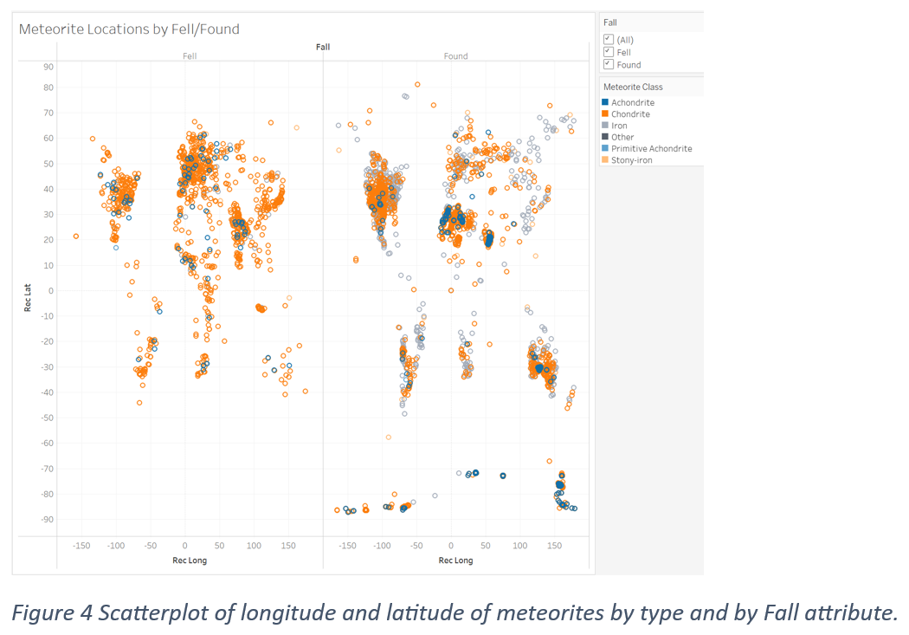
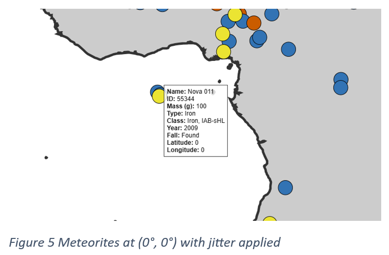

NEWM-N328 Final Project
E. Amacker
May 1, 2025
The Dataset
Kaggle’s Meteorite Landings dataset contains 45,716 items (recorded meteorites) and ten attributes:
name – meteorite name
id – unique numeric identifier
nametype – “Valid” or “Relict” (highly weathered)
recclass – meteorite classification
mass – mass in grams
fall – “Fell” (observed) or “Found”
year – year of discovery
reclat, reclong – latitude and longitude
GeoLocation – formatted (lat, long) pair
These records originally came from NASA’s Data Portal (now offline) and ultimately from The Meteoritical Society’s Bulletin Database. The “rec” prefix means “recommended” by The Meteoritical Society (NASA, n.d.).
Data Analysis and Cleaning
R was used to examine and clean the dataset. One of my initial questions concerned identifying meteorite classes and exploring whether patterns in location and/or mass existed based on class. A count of unique recclass values in R revealed over 450 distinct classes, prompting further investigation into meteorite classifications through various sources. Meteorites are primarily categorized into three types: Stony, Stony-iron, and Iron, each further divided into specific groups and classes. To visualize every meteorite location meaningfully and identify potential patterns, I assigned meteorite types based on their recclass. This classification relied on widely accepted sources, including the Meteorite Classification article from Wikipedia (Wikipedia, 2024) and the Meteorite Classification Chart from the Kentucky Geological Survey Meteorite Database (Kentucky Geological Survey, 2023). As a result, I identified five categories: Stony: Chondrite, Stony: Achondrite, Stony-iron, Iron, and Other. Two columns were added to the dataset: meteorite_type (Stony, Stony-iron, Iron, and Other) and meteorite_class to distinguish Chondrite from Achondrite within the Stony type.
With categorical classification established, additional questions arose: What percentage of the total does each meteorite type represent? How is mass distributed, and are there any type-specific patterns? Do certain meteorite types predominantly appear in particular locations?
To address data integrity, I removed entries with missing mass or location values, reducing the dataset to 44,010 records. Subsequently, I used Tableau to perform a preliminary exploratory visual analysis to guide the visualization design. Initially, Tableau visualizations included Primitive Achondrites as a separate category; however, in my final visualization, these meteorites were incorporated into the Achondrite type. Below are my Tableau visualizations:




Final
Design
I chose to focus on two visualizations: a world map showing meteorite locations and a histogram depicting mass distribution. The map and histogram were designed to address these questions: What percentage of the total does each meteorite type represent? What is the distribution of mass, and are there patterns related to meteorite type? Are different meteorite types predominantly found in particular locations? The histogram of mass distribution is intended to provides insight into the range of meteorite masses and specific trend in ass by type.
I selected the equirectangular projection over Mercator or orthographic to ensure the entire map would be clearly visible at an optimal scale on the webpage, aiding pattern recognition. The map features a white background with dark grey landmasses outlined in black, providing effective contrast and emphasizing geographic features. Circles represent meteorite locations, plotted according to longitude and latitude coordinates (x, y). I chose five categorical hues from the colorblind-friendly, qualitative Okabe–Ito 8-color palette to encode the type attribute. Each circle has a black stroke added for emphasis. A legend with filtering is positioned above the map, enabling users to isolate combinations of meteorite types. An Interactive tooltip provides detailed information about each meteorite on demand, notably the recommended meteorite class. Additionally, zooming and panning features improve resolution for closely clustered meteorites, complemented by a "reset view" button outside the map that restores the original view. Jitter was applied to slightly offset meteorites with identical coordinates. I chose not to encode circle size based on mass due to potential obscuring; instead, mass data is explored separately in the histogram and is available in the tooltip. Overall, the map adheres to Ben Shneiderman’s Information–Seeking Mantra: "Overview first, zoom and filter, then details on demand."
For the mass histogram, I adapted example code from the D3 Gallery Histogram to develop a stacked histogram categorized by meteorite type. The same color scheme from the map was used to maintain consistency. A light grey background enhances contrast, improving hue visibility. Given the extensive mass range, I implemented a log10 scale. A tooltip provides additional context, including bin details, mass ranges for the bin, and meteorite counts, enhancing understanding of the log scale. I opted for a stacked bar format because it provides insights into meteorite mass distributions, emphasizing the general size of meteorites and mass-related trends across different meteorite types. Although I encountered difficulty implementing zoom and pan features to reset the histogram to its initial axis view, such functionality would have facilitated closer examination of bins with smaller counts.
Findings
An outlier off the coast of Africa prompted me to review this item in the dataset. It revealed that three points were piled at (0°, 0°)—Nova 006, Nova 010, and Nova 011. A lookup in the Meteoritical Bulletin Database confirmed that the exact landing location for these specimens are unknown. This prompted me to apply jitter to all of the circles to reveal them visually. The Nova meteorites with jitter offset added is shown below.

The mass histogram (log₁₀ scale) is roughly bell-shaped with a slight right skew. Chondrites dominate every bin. Irons have higher counts toward the high-mass tail. Other meteorites are nearly absent and are found in the lowest bins (smallest masses).
Both the map and histogram confirm that stony meteorites, especially chondrites, are by far the most abundant. The geographic pattern of the locations on the map suggests that landings and/or discoveries concentrate in more developed regions. Adding a physical-terrain/vegetation overlay (mountains, rainforest, ice cover) would possibly provide more insight. Further manual categorization of the meteorites to produce separate percent of total bar charts and per-type histograms side-by-side would be great next steps.
Sources:
D3. (n.d.). Histogram. Observable. Retrieved April 8, 2025, from https://observablehq.com/@d3/histogram/2
FreeCodeCamp. (n.d.). Visualize data | Map data across the globe – D3.js [Video]. YouTube. Retrieved April 15, 2025, from https://www.youtube.com/watch?v=dJbpo8R47D0
Kentucky Geological Survey. (2023, January 5). Meteorite Database. University of Kentucky. Retrieved April 5, 2025, from https://www.uky.edu/KGS/rocksmineral/meteorite-database.php#
Lunar and Planetary Institute. (n.d.). The Meteoritical Society’s Meteorite Database. Retrieved May 1, 2025, from https://www.lpi.usra.edu/meteor/
NASA. (n.d.). Meteorite Landings [Data set]. NASA Open Data Portal. Retrieved May 1, 2025, from https://data.nasa.gov/Space-Science/Meteorite-Landings/gh4g-9sfh
Siegal Lab. (n.d.). Color palette. Siegal Lab. Retrieved May 1, 2025, from https://siegal.bio.nyu.edu/color-palette/
Wikipedia. (2024, April 15). Meteorite classification. In Wikipedia. Retrieved April 5, 2025, from https://en.wikipedia.org/wiki/Meteorite_classification